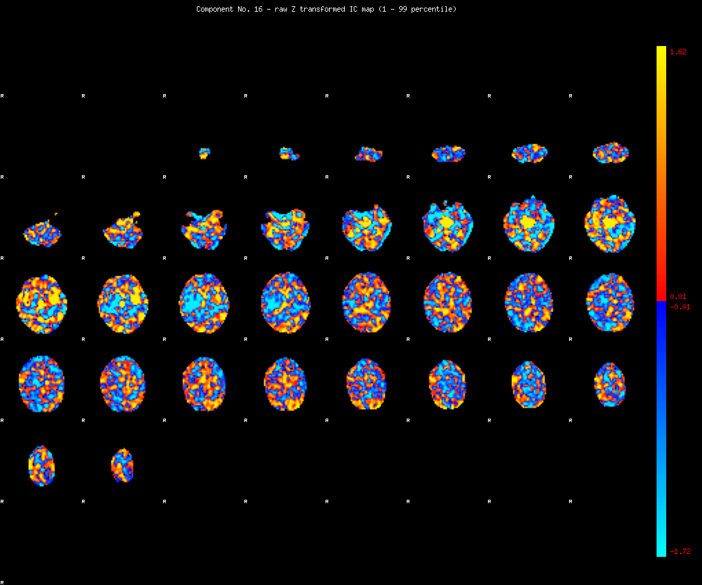
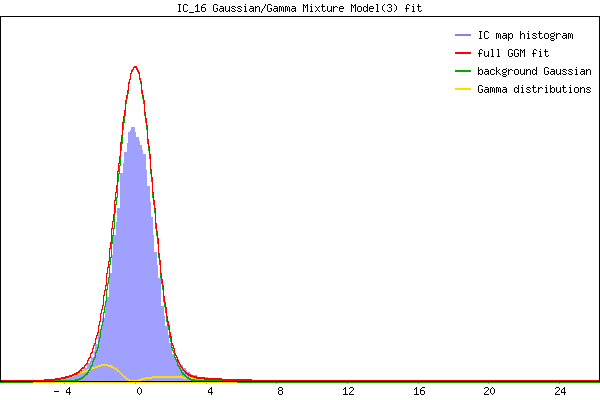

IC_16 Mixture Model fit
Means : -0.000000 3.407492 -2.253614
Vars : 1.000000 5.847657 1.243355
Prop. : 0.927155 0.024968 0.047877
This page produced automatically by MELODIC Version 3.13 - a part of FSL - FMRIB Software Library.